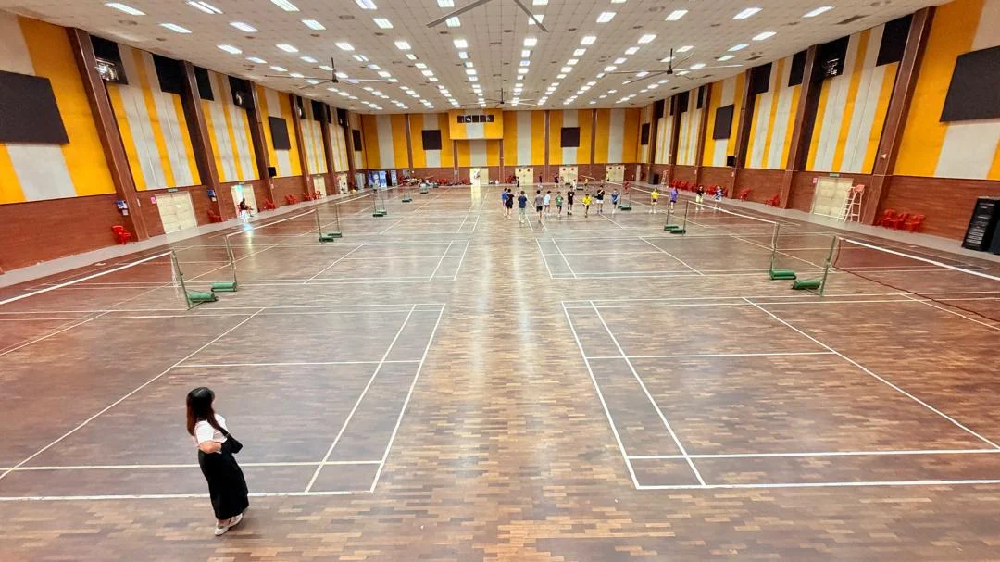

YOUR NEXT STEP STARTS HERE.
Training and court bookings on WhatsApp. International exchange and academy partnerships by email.
tanweekiongba@gmail.com
Email us ↗
VISIT US
SJK (C) TSUN JIN
Jalan Perwira, Kampung Pandan, 55100 Kuala Lumpur, Wilayah Persekutuan Kuala Lumpur, Malaysia
Walk-in enquiries are welcome. Please contact us before visiting so we can advise on a suitable time.
Get directions ↗